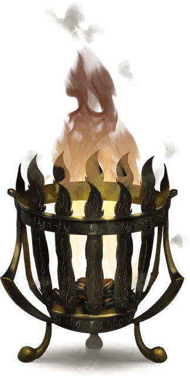

Жаровня командования огненными элементалями
Brazier of Commanding Fire Elementals
Чудесный предмет, редкий

Рекомендованная стоимость 4 000 ЗМ
Пока вы находитесь в пределах 5 футов от этой жаровни, вы можете действием Магия призвать Огненного элементаля. Элементаль появляется в ближайшем к жаровне незанятом пространстве; он повинуется вашим командам, в бою имеет то же значение Инициативы, что и вы, и ходит сразу после вас. Элементаль исчезает через 1 час, когда умирает, или когда Бонусным действием вы отпустите его. Жаровню нельзя снова использовать для призыва элементаля до следующего рассвета.